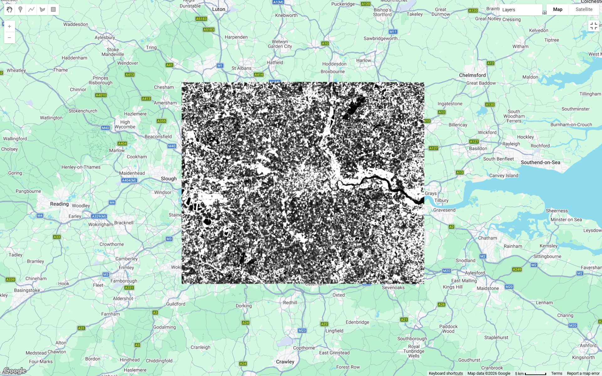

Week 4-5: Policy and Google Earth Enginee 1
Week 4: Policy
Summary
This week’s focused on how Earth Observation (EO) data can be used to support policy, particularly in urban and environmental contexts. Various types of EO data were introduced, such as land use/land cover (LULC) mapping, change detection, pollution monitoring, and vegetation health analysis. This data comes from sensors such as Landsat, Sentinel, and SAR, which have varying resolution characteristics. A key takeaway was that the value of remote sensing depends heavily on how the data is linked to policy needs.
Analysis
In this week’s practical, I explored the Los Angeles drought and how remote sensing can support water restriction policies. Using NDMI from Sentinel-2 data, we can identify areas of vegetation with high moisture levels during drought periods. This allows the government to detect potential violations of park watering regulations spatially and systematically. I believe this approach differs from conventional methods that rely on public reports or manual inspections. Remote sensing allows for comprehensive monitoring at a city-wide scale with high frequency. One interesting example is the use of NDMI (Normalized Difference Moisture Index) to detect homes still watering their gardens during a drought. This demonstrates that remote sensing can be used not only for monitoring but also to control people’s behavior in a policy context.
Limitations
Despite its many advantages, the use of remote sensing in policymaking also has limitations. First, spatial resolution makes it difficult to detect small objects such as individual houses, especially in densely populated areas. High-resolution data is available, but it is often expensive and not always accessible. Second, there is uncertainty in interpretation. High NDMI values do not always indicate excessive watering; they can also be caused by vegetation type, soil conditions, or other environmental factors. This can lead to errors in decision-making. Third, there are ethical and privacy issues. The use of remote sensing to monitor individual properties can raise concerns about surveillance and unauthorized use of data. Finally, as emphasized in the lecture, many studies fail to link remote sensing analysis results to actual policy implementation. Without clear integration, the resulting data can be irrelevant for decision-making.
Supporting Studies
Li et al. (2022) combined Land Surface Temperature (LST) data with social variables such as age and income to analyze health risks from urban heat. This study showed that EO becomes more powerful when combined with social data, as it can identify the most vulnerable population groups. However, this approach also has its critics. Some researchers argue that such models rely too much on statistical correlations and do not necessarily demonstrate a strong causal relationship between temperature and health impacts. On the other hand, Wellmann et al. (2020) emphasize the importance of remote sensing in sustainable urban planning, particularly in the analysis of green space and urban ecology. They argue that EO can support ecosystem-based policies. However, there is debate that this approach is often too general and does not take into account local social and economic dynamics. In comparison, I find the NDMI approach to drought monitoring more direct and operational, as it can be used for policy enforcement, not just analysis. However, this approach remains underdeveloped in the academic literature, particularly regarding validation and ethical aspects.
Future Application
In my opinion, the use of remote sensing in policymaking will continue to grow through integration with other technologies. One key direction is real-time monitoring, where satellite data can be directly linked to policy systems to support rapid decision-making. Furthermore, the concept of data fusion will become important, combining EO data with IoT sensors (e.g., smart water meters), socioeconomic data, and climate models. The use of machine learning also has the potential to improve the accuracy of analysis and pattern detection. Globally, remote sensing will play a crucial role in monitoring the achievement of the Sustainable Development Goals (SDGs), particularly those related to water, sustainable cities, and climate change.
Reflection
This week, I learned that remote sensing can also act as a tool that can directly influence policy and human behavior. I discovered that the main strength of EO lies not only in its ability to collect data, but in how that data is used to make more effective and equitable decisions. However, I also realized that using this technology is not without challenges, particularly in terms of ethics and data interpretation.
Reference
Li, D., Newman, G.D., Wilson, B., Zhang, Y. and Brown, R.D. (2022) ‘Modeling the relationships between historical redlining, urban heat, and heat-related emergency department visits: An examination of 11 Texas cities’, Environment and Planning B: Urban Analytics and City Science, 49(3), pp. 933–952.
Wellmann, T., Lausch, A., Andersson, E., Knapp, S., Cortinovis, C., Jache, J., Scheuer, S., Kremer, P., Mascarenhas, A., Kraemer, R., Haase, A., Schug, F. and Haase, D. (2020) ‘Remote sensing in urban planning: Contributions towards ecologically sound policies?’, Landscape and Urban Planning, 204, p. 103921.
Week 5: Google Earth Enginee 1
Summary
This week focuses on using Google Earth Engine (GEE) as a cloud-based platform for large-scale remote sensing data analysis. The practical work was conducted using Landsat 8 Collection 2 Level 2 data to analyze urban environmental conditions in London. The study area was defined using rectangular geometry to facilitate the filtering and clipping processes. The analysis process included filtering data based on time, location, and cloud level, followed by creating a median composite to reduce noise and cloud effects. Next, a scaling factor was applied to convert pixel values into physically valid reflectance. The analysis continued with NDVI calculations to identify vegetation distribution, and texture (GLCM) to capture spatial variations in the urban environment.
Analysis

The NDVI map shows a clear spatial pattern of vegetation distribution across London. Areas with higher NDVI values (dark green) are predominantly located in peripheral zones and large urban parks, indicating dense vegetation cover. In contrast, central London exhibits lower NDVI values (yellow to light tones), reflecting a high concentration of built-up surfaces such as buildings and roads. The River Thames is distinctly visible as a linear feature with very low NDVI values due to the absence of vegetation. This highlights how NDVI effectively differentiates between vegetated and non-vegetated surfaces in an urban environment.

The texture contrast map further enhances this interpretation by revealing spatial heterogeneity across the city. Highly urbanized areas appear more fragmented and heterogeneous (high contrast), while vegetated regions show more homogeneous patterns. However, in my opinion, the texture result appears quite noisy and less intuitive to interpret compared to NDVI. This may be due to the relatively coarse spatial resolution of Landsat data (30 m), which can exaggerate local variability and reduce clarity in dense urban areas. Therefore, while texture provides additional spatial information, its usefulness in this case is somewhat limited, and NDVI remains the more reliable indicator for interpreting urban environmental patterns.
Limitations
Although the analysis results are quite good, there are several limitations. Landsat’s resolution (30 meters) is relatively coarse for detailed analysis in urban areas, so small features such as small parks or narrow streets cannot be detected well. Furthermore, using rectangular geometry as the study boundary may result in areas outside London’s administrative boundaries being included in the analysis. NDVI also has limitations in urban environments due to the presence of mixed pixels and the possibility of misclassification on artificial surfaces. The use of a median composite also assumes homogenous temporal conditions, so seasonal variations in vegetation are not accounted for. This can reduce the accuracy of interpreting environmental dynamics.
Supporting Studies
Gorelick et al. (2017) explained that GEE is designed to enable highly efficient global-scale geospatial analysis through cloud-based computing. The primary focus of this research is the platform’s ability to manage big data and accelerate the analysis process compared to traditional desktop-based methods. Meanwhile, a study by Amani et al. (2020) provides a broader overview of various GEE applications in remote sensing research, including land classification, environmental monitoring, and temporal change analysis. This study emphasizes that GEE is not only a data processing tool but also an integrative platform that supports a variety of modern analysis approaches.
Compared to these two studies, this week’s practical is more basic and focuses on simple workflows such as filtering, compositing, NDVI, and texture. However, I believe this practical reflects the key concepts described in both papers: data processing efficiency and the capability of large-scale multi-temporal analysis. The main difference lies in complexity, where studies in the literature use more advanced approaches such as machine learning and multi-dataset integration.
Future Application
The methods used in this practical have great potential for real-world applications, particularly in urban planning and environmental management. NDVI can be used to identify the distribution of green space, while texture can aid in land use classification. In the future, this analysis can be expanded by incorporating other data, such as land surface temperature (LST), to study the urban heat island phenomenon. Furthermore, the use of higher-resolution data, such as Sentinel-2, can improve the accuracy of the analysis. Integration with machine learning in GEE also opens up opportunities for automated classification and environmental change prediction.
Reflection
This week’s learning was very interesting because it demonstrated how remote sensing can be practically applied using a cloud platform like GEE. I learned that preprocessing, such as filtering and compositing, significantly impacts the quality of analysis results. Furthermore, the combination of NDVI and texture provides a broader perspective in understanding urban environments. This practical also made me realize that despite the power of technology, there are still challenges in interpreting the results and connecting them to real-world policies or planning. Nevertheless, the skills acquired are highly relevant for future environmental and urban analysis.
Reference
Amani, M., Ghorbanian, A., Ahmadi, S.A., Kakooei, M., Moghimi, A., Mirmazloumi, S.M., Moghaddam, S.H.A., Mahdavi, S., Ghahremanloo, M., Parsian, S., Wu, Q., Brisco, B., 2020. Google Earth Engine Cloud Computing Platform for Remote Sensing Big Data Applications: A Comprehensive Review. IEEE Journal of Selected Topics in Applied Earth Observations and Remote Sensing 13, 5326–5350.
Gorelick, N., Hancher, M., Dixon, M., Ilyushchenko, S., Thau, D., Moore, R., 2017. Google Earth Engine: Planetary-scale geospatial analysis for everyone. Remote Sensing of Environment, Big Remotely Sensed.Data: tools, applications and experiences 202, 18–27.